第一篇 复变函数
主要内容：复变函数、解析函数、复变函数的积分、级数、留数定理、保角变换。
重点：解析函数、复变函数的积分与留数定理
特色：通过一典型环路积分，将各章节有机联系起来，使复变函数理论成为一个系统的有机整体，并加强了各部分内容之间的相互联系，注重培养学生创新思维、计算机仿真和解决实际问题的能力。
数学发展的历史告诉我们：虚数是在代数运算过程中开始出现的。早在16世纪，对一元二次、一元三次代数方程求解时就引入了虚数的基本思想。1545年，卡丹诺（Girolamo Cardano, 1501—1576年，意大利数学家）在他的Ars Magna一书中给出了虚数的符号和运算法则，但同时也对这种运算的合法性表示怀疑。卡丹诺对虚数引入的基本思想：
一元三次方程 （其中 为实数）的求根公式，通常也叫做卡丹诺（Cardano）公式：
因为在复数域中立方根一般是3个，因而简记为：
式中， 分别给出三个值 和 。在应用卡丹诺公式中，对于某一个确定的 ，需要满足条件 的 组合构成其解，以实现对解的限制，限制后的解 为3个。读者可参考库洛什著《高等代数教程》。
需特别指出：可以证明，当 有3个不同的实根时，若要用公式法来求解，则不可能不经过负数开方（范德瓦尔登著《代数学》，丁石孙译，科学出版社，1963年）。至此，我们明白了这样的事实，此方程根的求得必须引入虚数概念。
卡丹诺公式出现于17世纪，那时虚数的地位就已初步确定下来，但对虚数的本质还缺乏认识。“虚数”这个名词是由17世纪的法国数学家笛卡儿（Descartes）正式取定的。“虚数”代表的意思是“虚假的数”、“实际不存在的数”，后来还有人“论证”虚数应该被排除在数的世界之外。由此给虚数披上了一层神秘的外衣。
18世纪，瑞士数学家欧拉（Leonhard·Euler，1707—1783年）试图进一步解释虚数到底是什么数，他把虚数称为“幻想中的数”或“不可能的数”。他在《对代数的完整性介绍》（1768—1769年在俄国出版，1770年在德国出版）一书中说：因为所有可以想象的数或者比零大，或者比零小，或者等于零，即为有序数。所以很清楚，负数的平方根不能包括在可能的有序数中，就其概念而言，它应该是一种新的数，而就其本性来说它是不可能的数。因为它们只存在于想象之中，所以通常叫做虚数或幻想中的数。于是，欧拉首先引入符号i作为虚数单位。
18世纪末至19世纪初，挪威测量学家威塞尔（Wessel）、瑞士的工程师阿尔甘（Argand）以及德国的数学家高斯(Gauss)等都对“虚数”（也称为“复数”）给出了几何解释，并使复数得到了实际应用。
特别是在19世纪，有三位代表性人物，即柯西（Cauchy，1789—1857年）、维尔斯特拉斯（Weierstrass，1815—1897年）、黎曼（Riemann，1826—1866年）。柯西和维尔斯特拉斯分别应用积分和级数研究复变函数，黎曼研究复变函数的映射性质，经过他们的不懈努力，终于建立了系统的复变函数论。至此，披在虚数身上的神秘外衣才算真正被揭开，复变函数论才在数学科学的丛林之中昂然挺立，独树一帜。从柯西算起，复变函数论已有170多年的历史，复变函数论以其完美的理论与精湛的技巧成为数学的一个重要组成部分。
自从有了复变函数论，实数领域中的禁区或不能解释的问题，如负数不能开偶数次方、负数没有对数、指数函数无周期性、正弦函数、余弦函数的绝对值不能超过1等，已经迎刃而解。
根据数学理论，在系统的函数论中所涉及的函数有：实变实值，实变复值，复变实值，复变复值。复变函数论主要讨论复变复值函数。需要指出的是，系统的复变函数论主要包括单值解析复变函数论、多值复变函数论（黎曼曲面理论）、几何函数论、留数理论、广义解析函数等方面的内容。限于篇幅，本篇主要讨论单值解析复变函数论，具体讨论复数与复变函数、解析函数及复变函数的积分、级数展开、留数等系统理论，并介绍保角变换、傅里叶变换和拉普拉斯变换。
当人们澄清了复数的概念并建立了系统的复变函数论后，新的问题是：能否在保持复数的基本性质条件下对复数系进行新的扩张呢？答案是否定的。当哈密顿（Hamilton）试图寻找三维空间复数的类似物时，他发现自己被迫要作两个让步：第一，他的新数要包含4个分量；第二，他必须牺牲乘法的交换律。这两个特点都是对传统数系的革命。他称这种新的数为“四元数”。“四元数”的出现昭示着传统观念下数系扩张的结束，否则必须抛弃数系传统的基本性质——交换律。
“四元数”说明：将复变函数再进一步推广就是以 为基的四元数： ，其中 是实数， 是基单元。注意四元数全体不能构成域，因为它不满足乘法的交换律。读者可参考相关文献资料。
数学的思想一旦冲破传统模式的藩篱，便会产生无可估量的创造力。哈密顿的四元数的发明，使数学家们认识到如果可以抛弃实数和复数的交换性（即抛弃复数的基本性质）去构造一个有意义、有作用的新“数系”，那么就可以较为自由地考虑甚至偏离实数和复数的通常性质的代数构造，从而使得另一个通向抽象代数的大门被打开。我们相信，随着科学技术的不断发展，数学系统理论将不断地完善和自洽。
第1章 复数与复变函数
本章概述性地描述复数的基本知识和复变函数区域的基本概念及其单连通、多连通的判断，以及复变函数连续和极限的概念。区域概念及其区域判断、复变函数的极限和连续是本章的重点。同时，本章涉及计算机编程实践，以培养读者的计算机仿真能力。读者可以利用Matlab,Mathcad,Mathmatic等数学工具软件直接进行复数及复变函数的基本运算，详细请参考第四篇。
1.1 复数概念及其运算
1.1.1 复数概念
1. 数域的拓展——复数域
在解方程时，有时会遇到负数开方的问题，但在实数范围内负数是不能开平方的。前面已经叙述，早在18世纪数学家欧拉就引入一个新符号i称为虚数单位，并规定 。这样，在实数域内无解的方程 在数域拓展后也有两个根：i和-i。这样就实现了由实数域拓展为新的数域：复数域。
2. 复数的概念
✨定义1.1.1 复数 形如 的数称为复数（Complex number），记为
或 。其中， 称为复数 的实部（Real Part）， 称为复数 的虚部（Imaginary Part），记为
或
特别地，当 ，且 时， 称为纯虚数；当 时， 是实数。
3. 复数的集合表示
✨定义1.1.2 复数集 全体复数组成的集合称为复数集，记为 ，即
此处 为实数（Real number）集。
4. 复数相等
对于两个复数 和 ，当且仅当实部 且虚部 时，才称 和 两个复数相等，记为 。
5. 复数的无序性
实数可以比较大小，是有序的，但复数不能比较大小，即复数是无序的。尽管复数的实部 和虚部 均为实数，但是由于复数 是实部和虚部通过虚单位i联系起来的，从而不能比较大小。
问：复数为什么不能比较大小？
解释：复数是实数的推广，若复数能比较大小，则它的大小顺序关系必须遵循实数顺序关系的有关性质。例如，在实数中，若 ，则 ；若 ，则 。我们用复数 和0来说明。对于非零复数即 ，若 ，根据实数不等式的性质，两边同乘以“大于零”的i，得 ，即 ，矛盾；若 ，两边同乘以“小于零”的i，可推得 ，也矛盾。由此可见，在复数域中无法定义大小关系，即两个复数不能比较大小。
1.1.2 复数的基本代数运算
1. 四则运算
复数域是实数域的推广，实数是复数的特例，故规定复数的运算时，必须使得复数的代数运算满足实数代数运算的一些基本要求。
设 为任意两个复数，它们的四则运算定义如下。
-
加（减）法：
-
乘法：
-
除法： (1.1.4)
2. 复数运算的性质
不难证明，复数的四则运算也满足交换律、结合律和分配律
3. 复数的二项式定理
实数的二项式定理对复数同样有效
✨定理1.1.1 复数的二项式定理 根据复数的四则运算，如果 和 为任意复数，那么二项式展开满足
即二项式定理。其中， （
（提示：可用数学归纳法证明。首先证明当 时等式成立，再假设当 时（ 为任意整数）等式成立。最后证明，等式对于 仍成立。）
1.2 复数的表示
1.2.1 复数的几何表示
1. 复平面的定义
✨定义1.2.1 复平面
由于一个复数 由一对有序实数唯一确定，故对于平面上给定的直角坐标系，复数的全体与该平面上的点的全体形成一一对应关系，从而复数 可以用该平面上坐标为 的点来表示。其中， 轴称为实轴， 轴称为虚轴，两轴所在的平面称为复平面或 平面。
2. 复数的几何表示
✨定义1.2.2 复数的几何表示——笛卡儿坐标表示
在复平面内，复数 除了用点 表示外，还可以用从原点指向点 的矢量（或向量) 来表示复数，称为复数的几何表示。如图1.1所示，矢量 或 代表复数 。从这种几何意义上，我们把 iy 称为复数的直角坐标表示（或复数的代数表示）。
复数的加（减）运算与两个矢量的加（减）运算完全一致，也可用平行四边形或三角形法则求出。
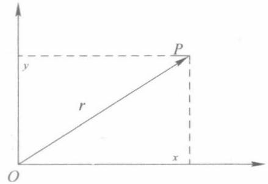
图1.1
3. 复数的模
✨定义1.2.3 复数的模
矢量 的长度 叫做复数 的模（或绝对值），记为 ，即
（1）显然，有下列式子成立：
（2）如果 ，则：
① 两点 的距离是 ，即
② 三角不等式
成立，这是因为三角形的两边之和大于或等于第三边。
③ 该三角不等式的一个直接结果是
该式的几何意义为：三角形的一边长大于或等于另外两边长之差。
(3) 若满足 ，则复数 对应于以点 为圆心、 为半径的圆上各点，简称复数 对应的点都在圆周上。
⭕例1.2.1 用数学归纳法证明三角不等式(1.2.4)可以推广为有限项和的形式：
【证明】（1）当 时，式(1.2.6)就是式(1.2.4)，故不等式成立。
(2) 设当 时, 式(1.2.6)成立, 那么当 时, 有
即 ，故原不等式成立。
1.2.2 复数的三角表示
1. 复数的辐角
✨定义1.2.4 辐角，辐角的主值
复数 对应的点 的极坐标为 和 ，当 时，复数 的矢量与实轴正向间的夹角 称为复数 的辐角，记为
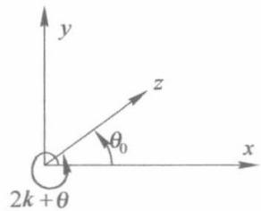
_图1.2
显然， ，所以
需要指出，任何一个非零复数 有无穷多个辐角（如图1.2所示）。若 是辐角中的一个，则有
式（1.2.9）表示 的全部辐角。我们规定其中满足
的辐角 为辐角 的主值，记为 。
说明：
① 本书按常规约定：辐角主值范围为 （有时根据讨论问题的方便，也可选取主值范围为 ）。
②我们约定多值函数的第一字母通常大写，如 ，而单值函数第一字母通常小写，如 。
③当 时，其模 ，但辐角不确定。因此我们约定：对于复数零，其辐角无定义。
⭕例1.2.2 复数-1-i所对应的点在第三象限，求辐角及其辐角的主值。
【解】根据辐角定义和主值范围的规定，故辐角为
辐角的主值为
2. 复数的三角表示
✨定义1.2.5 复数的三角表示 利用笛卡儿坐标关系： ，可以把非零复数 表示成
这称为复数的三角表示式，即
1.2.3 复数的指数表示
✨定义1.2.6 复数的指数表示 利用欧拉公式
我们可以把任意非零复数 表示为指数形式，即
1.2.4 共轭复数
✨定义1.2.7 共轭复数（复数的共轭）
复数 的共轭复数定义为
所谓共轭复数，是指其实部不变，虚部反号。共轭复数在复平面内的几何意义表明：点 是点 关于实轴的对称点。
性质：
-
(1.2.16)
-
(1.2.17)
-
(1.2.18)
-
共轭复数满足常规的四则运算
注：共轭复数也可以表示为 ，但本书统一用 表示。
⭕例1.2.3 设 ，证明： 。
【证明】只需证 即可。
因
由 得， ，所以
1.2.5 复球面、无穷远点
1. 复球面
✨定义1.2.8 复数球，复球面
除了用平面内的点或矢量来表示复数外，还可以用球面上的点来表示复数。取一个与复平面切于原点的球面，通过原点做垂直于复平面的直线与球面相交于另一点 ，称 为北极，而 点为南极。这个球叫做复数球，如图1.3所示。
在复数平面 上任取一点 ，它与球的北极 的连线相交于球面点 。这样，复平面上的有限远点与球面上除 点外的点满足一一对应关系。这样，球面上的每个点就有复平面上唯一的一个复数与之对应，这样的球面称为复球面。
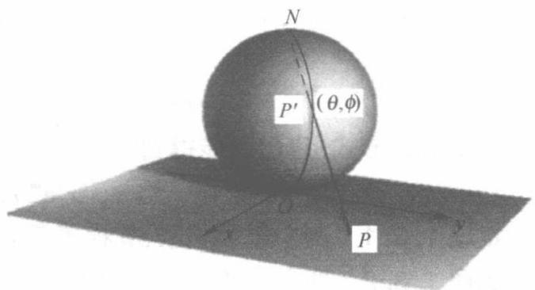
图1.3
2. 无穷远点
✨定义1.2.9 无穷远点
设想点 在 复平面上, 沿着一根通过原点的直线向无限远移动, 对应的点 就沿着一根子午线(经线)向北极 逼近, 如图1.3所示。事实上, 不管点 沿着什么样的曲线向无限远移动, 总是相应地沿着某曲线逼近于点 。为了使复平面上的点无例外地都能一一对应起来, 我们定义: 复平面上有一个唯一的“无穷远点”, 它与球面的北极 相对应。无限远点的模为无限大，它的辐角则没有明确定义
3. 扩充复平面
✨定义1.2.10 有限平面，扩充复平面
不包括无穷远点在内的复平面称为有限平面（或称为开平面），包括无穷远点在内的复平面称为扩充复平面（或闭平面）。对于复数 来说，其实部、虚部与辐角的概念均无意义，但它的模为正无穷大，即 。对于其他复数 ，则有 。复球面能把扩充复平面的无穷远点明显地表示出来，这就是它比复平面优越的地方。
4. 无穷远点的四则运算
为了运算方便，关于 点的四则运算做如下规定
加（减）法： （1.2.19）
乘法： (1.2.20)
除法： (1.2.21)
至于其他运算： ，我们不规定其意义。同样， 仍然不确定。
说明：我们引进的扩充复平面与无穷远点，在很多讨论中能够带来方便。无穷远点是一个非常重要的概念，特别是在后面章节中讨论留数时，会使很多积分计算得到简化。这里需要说明的是：以后若无特殊声明，所谓“平面”一般仍指有限平面，所谓“点”仍指有限平面上的点。
1.3 复数的乘幂与方根
1.3.1 复数的乘幂
根据复数的三角表示，设 ，根据复数乘法得
于是有
若用指数形式，我们也能得到
✨定理1.3.1 两个复数相乘，其模等于它们模的乘积，其辐角等于它们辐角的和。
✨定理1.3.2 两个复数的商的模等于它们模的商（注意：分母不能为0）；两个复数的商的辐角等于被除数与除数的辐角之差。
两个复数相除的指数形式表示为
✨定义1.3.1 乘幂利用数学归纳法可以将上式推广到 个复数相乘的三角形式与指数
形式
很自然，对于 个相同的 的乘积，称为 的 次乘幂（简称为 次幂），记为 ，即
当 即 时，由上式得到
这就是著名的棣模弗（De Moivre）公式。
特别地，当 时，即为前面提到的欧拉公式：
⭕例1.3.1 已知 ，求 的值。
【解】由 知， 是方程 除-1外的两个虚数根，即 因此 故
⭕例1.3.2 将 与 表示为 与 的幂形式。
【解】 由棣模弗（DeMoivre）公式得到
根据复数相等得到
1.3.2 复数的方根
✨定义1.3.2复数的方根
定义了复数的乘幂 后，我们可以求其逆运算来得出方根的计算方法，即求满足 的根 ，其中 为已知复数。我们把满足 的复数 称为 的 次方根，记为 ，即 。
当 时，有 ；当 时，为从已知的 求出 ，令
于是由 得到 ，所以
由辐角的多值性 得到
所以
容易验证，当 时得到 的 个不同的值；当 取其他整数时，将重复出现上述这 个值。因此，一个复数的 次方根只能取这 个不同的值，即
复数方根的几何意义：这 个方根是以原点为中心， 为半径的圆的内接正 边形的 个顶点。
说明：有时为了计算方便， 个不同的方根值也可以表示为
式(1.3.10)中，当 时的值 正好对应于式（1.3.8）中的 的值 ，即 （读者能方便地从图1.4中 情况看出， 和 是重合的），而其余的对应值 完全相同。读者可视问题的方便任选一公式即可。
⭕例1.3.3 求1的 次方根，并讨论根在复平面单位圆周上的位置。
【解】设方根为 ，根据式（1.3.8）有
当 时，其根为 ，对应于单位圆与实轴的两交点。
当 时，各根分别位于单位圆 的内接正多边形的顶点处，其中一个顶点对应着主根 。图1.4表示当 时根的分布情况。
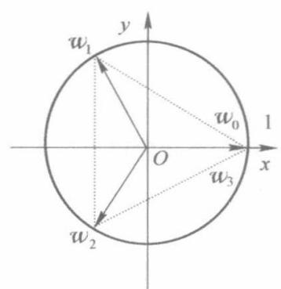
(a)
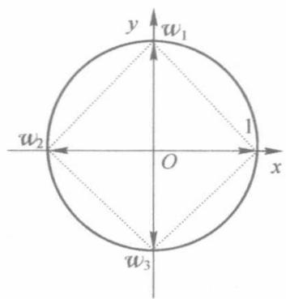
(b)
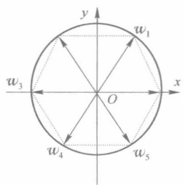
(c)
图1.4
1.3.3 实践编程：正十七边形的几何作图法
作为复数的应用，在此介绍一个有趣的几何作图问题，即正十七边形的几何作图问题。为了简化，设边长为 的正十七边形内接于单位圆，如图1.5所示，则边长 。如果用复数的方法求出 的代数表达式，因而也就解决了该正多边形的作图问题。这种方法是否可以进一步推广，留给有兴趣的读者去思考。读者还可尝试使用计算机语言（ ）或数学软件Matlab，Mathematic，Mathcad等进行编程实践练习。
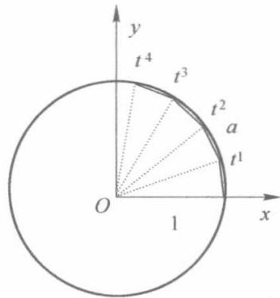
图1.5
考虑方程 解的情况：设 ，则易见 均为方程的根；另一方面， 0,因为 ，所以
令
注意到：
显然， ，将 和 直接相乘，即可验证
在复平面上标出 的位置。可以看出，这些点均匀地分布在单位圆周上，而且 与 与 与 与 均互为共轭，根据 的表达式可知 一定为实数，并且从 各点的具体位置可以进一步断定 为正值。因此
再进一步将 和 拆开成两组数之和（ 和 并不代表求导，下面 亦然）：
容易证明
所以
再令
显然，有
所以
由三角公式： ，且考虑到 则
故得到
采用复数的方法求出了边长 的代数表达式，且 和 均可用几何作图法绘出，从而可绘出正十七边形。
1.4 区域
1.4.1 基本概念
为了系统地学习复变函数的理论，下面给出了较完整的基本概念。这些概念不仅有利于理解区域、闭区域以及区域的连通阶数等概念，而且有利于对整个复变函数理论进行系统的、完整的、准确的理解和学习。
（1）邻域：以复数 为圆心，以任意小的正实数 为半径作一圆，则满足 的所
有点的集合称为 的 邻域。
（2）去心邻域：以复数 为圆心，以任意小的正实数 为半径作一圆，则满足 的点的集合称为 的一个去心 邻域。
（3）聚点：给定无穷序列 ，若存在复数 ，对于任意给定的 ，恒有无穷多个 满足 ，则称 为 的一个聚点(或极限点）。如，序列 的聚点是i。一个序列可以有不止一个聚点，例如序列 就有两个聚点： 。
（4）孤立点：若 属于集合 ，但非 的聚点，则称 为 的孤立点。
例如，集合 中除点i是聚点外，其余各点都是孤立点。
为了叙述下列概念方便，我们统一设 为平面点集。
（5）内点：对于平面点集 ，设 ，若 及其邻域均属于 ，则称 为 的内点。
（6）外点：若 及其邻域均不属于点集 ，则称 为该点集的外点。
（7）开集：若 内的每个点都是内点，则称 为开集。
（8）连通集：若连接 内任意两点的折线也属于 ，则称 为连通集
（9）区域：区域严格的定义是指同时满足下列两个条件的点集：
① 全由内点组成
② 具有连通性：即点集中的任意两点都可以用一条折线连接起来，且折线的点全都属于该点集；区域可用符号 表示。
注：通常所谓某区域 是连通的，是指 中任何两点都可以用完全属于 的一条折线连接起来。
（10）边界：若 点的任意一个邻域内既有区域 的点，又有不属于区域 的点，则称 为区域 的一个边界点。由 的全体边界点组成的集合称为 的边界或边界线。
（11）闭区域：区域 及其边界所组成的点集称为闭区域，以 表示闭区域。
注：与闭区域相比较，把不含边界的区域 称为开区域。而且若无特殊声明，所谓区域均指开区域。而闭区域需明确指出。
例如，由 所构成的区域为闭区域，而由 所构成的区域为开区域。
（12）有界区域：如果一个区域 可以被包含在一个以原点为中心的圆内部，即存在正数 ，使得区域 的每一点 都满足 ，那么 称为有界区域。
（13）无界区域：根据上面的定义，非有界区域即为无界区域。
（14）连续曲线：若 和 是两个连续的实变函数，则方程组
代表一条平面曲线，称为连续曲线。若令 ，则这条曲线就可以用一个方程 来代表，这就是平面曲线的复数表示。
（15）光滑曲线：如果在区间 上， 和 都是连续的，且对于 的每一个值，有 ，那么这条曲线称为光滑曲线。
（16）逐段光滑曲线（或分段光滑曲线）：由几段依次相接的光滑曲线所组成的曲线称为逐段光滑曲线。
（17）简单曲线（或若尔当曲线）：设曲线 ，对介于 之间的 和 ，当 时，有 ，则点 称为曲线 的重点。没有重点的连续曲线
称为简单曲线。
（18）简单闭曲线：如果简单曲线 的两个端点重合，则 称为简单闭曲线。
（19）单连通域：复平面上的一个区域 ，如果在其中任作一条简单闭曲线，而曲线的内部总属于 ，就称为单连通区域，简称为单通域。
（20）复连通域：若一个区域不是单连通区域，就称为复连通区域或多连通区域，简称复通域。
具体是多少阶连通域可根据下列连通阶数的定义来具体确定
注：单连通区域和复连通区域有一个重要的区别：在单连通区域中，一条任意闭合曲线可以通过连续变形收缩成一点。换句话说，在单连通区域的任意两点 和 之间的任意两条曲线 和 可以通过连续变形从一条变到另一条，如图1.6(a)所示；而复通区域却不具有这样的性质，如图1.6(b)和(c)所示。
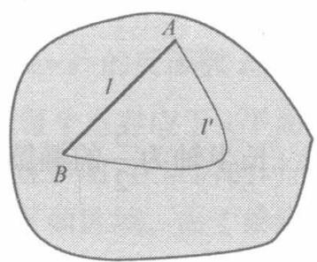
(a)
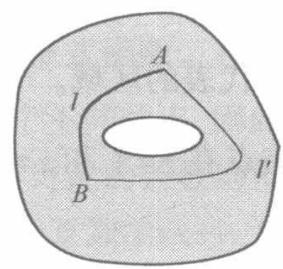
(b)
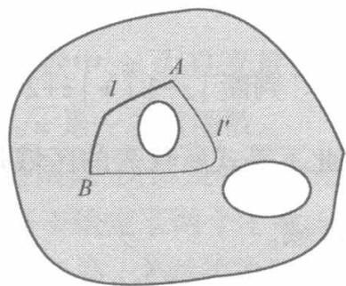
(c)
图1.6
（21）连通阶数：若有界区域 的边界被分成若干不相连接的部分，则这些部分的数目叫做区域的连通阶数。图1.7(a)为单连通区域（即为一阶连通区域），图1.7(b)为二阶连通区域，图1.7(c)为三阶连通区域。
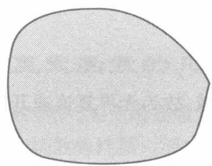
(a)
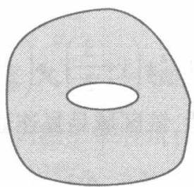
(b)
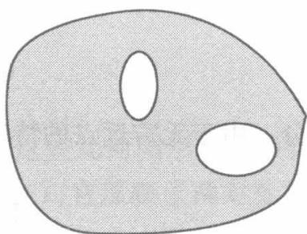
(c)
图1.7
（22）复连通域单连通化：作一些适当的割线能将复通区域的不相连接的边界线连接起来，从而降低区域的连通阶数，直至可以降为单连通区域（注意：连接边界的分开方式不唯一），如图1.8所示。
（23）边界线的正方向：为了以后学习环路积分方便，我们按照通常的规定：（当人）沿边界线环行时，所包围的区域始终在人的左手边，则前进方向为边界线的正方向。对于有界的单连通区域，图1.8(a)的逆时针方向即为正方向。而多连通区域单连通化后，外围逆时针为正方向，内部顺时针为正方向，如图1.8(b)和(c)所示。
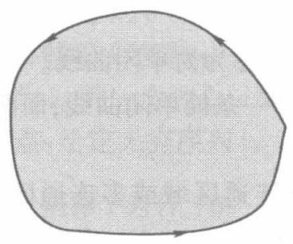
(a)
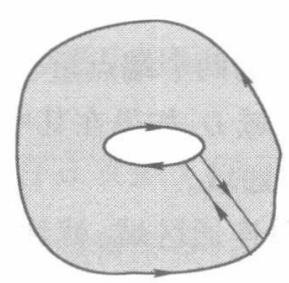
(b)
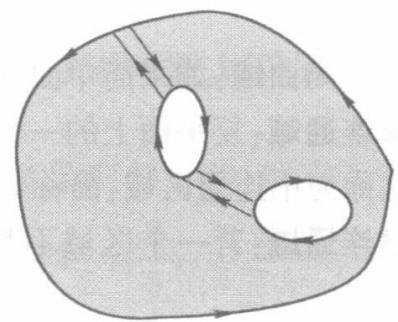
(c)
图1.8
1.4.2 区域的判断方法及实例分析
当判断区域是什么样的区域时，通常按照下列顺序进行：有、无界 单、复连通 开、闭区域。
⭕例1.4.1 判断 代表的区域。
【解】此不等式所代表的区域是焦点在 和 上，长半轴为 的椭圆内部，为有界单连通闭区域。
⭕例1.4.2 判断 代表的区域。
【解】代入 ，则
故 ，即
代表圆外部分。由于无穷远点的特殊性，该区域是复连通区域，故为无界复连通开区域。
1.5 复变函数
复变函数的基本概念是实变函数基本概念的推广，因此我们所叙述的复变函数、极限、函数连续与可微等概念与高等数学中的概念叙述相似。
但复变函数与实变函数就其几何意义而言，差别是非常大的。在微积分学中，通常把实变函数用几何图形表示出来，如用空间曲面表示二元单值函数 ，这样在研究函数性质时，这些几何图形就会使我们得到很多的启示和帮助。但是在研究复变函数时，由于自变量 是复数，而因变量也是复数，所以不能通过同一平面或同一空间上的几何图形来表示复变函数，因而复变函数的几何意义也就只能看做是两个复平面上点集之间的对应关系。
1.5.1 复变函数概念
✨定义1.5.1 复变函数 设 是一个复数 的集合, 若对每一个 , 按照一定的法则, 总有一个或几个复数 与之对应, 则称复变量 为复数 的复变函数, 记为 。
其中 称为函数 的定义域，函数值 的全体所构成的集合称为函数 的值域，记为 ，把 称为函数的自变量， 称为因变量。
✨定义1.5.2 单值函数，多值函数
每个自变量复数 ，对应着一确定的复数 的值，则称 为单值函数。每个自变量复数 ，对应着几个或无穷多个复数 的值，则称 为多值函数。
注：单值函数并不排斥不同的两点 与 可以对应着同一复数 。例如函数 是一个单值函数，因为与每个自变量复数 对应的 只有一个，但是 的两个自变量，所对应的 可以是同一个值，如
则 。由此可见，两个不同的 和 对应着同一复数值 。
幂函数 的反函数 称为根式函数。在根式函数中， 为自变量， 为因变量，由于 平面上每个点对应于 平面上两个不同的点，因此 是一多值函数。
若无特殊声明，在以后的讨论中所讨论的函数均指单值函数，所涉及的复变函数定义域 常常是一个平面区域。由于给定了一个复数 就相当于给定了两个实数 和 ，而复数 也同样地对应着一对实数 和 ，所以因变量 和自变量 之间的关系 相当于两个关系式：
它们确定了自变量为 和 的两个二元实变函数。
例如 ，令 ，则
因此函数 对应于两个二元实变函数：
1.5.2 复变函数的几何意义——映射
在高等数学中，实变函数通常用几何图形来表示，通过这些几何图形，我们可以直观地理解和研究复变函数的性质。而对于复变函数 ，它反映了两对变量 和 之间的对应关系，因而无法用同一个平面内的几何图形表示出来，必须把它看成两个复平面上的点集之间的对应关系。
如果用 平面(即为 平面)上的点表示函数 的值，那么函数 在几何上就可以看做是把 平面上的一个点集 （定义域的集合）变到 平面上的一个点集 （函数值的集合）的映射（或变换）。这个映射通常称为由函数 所构成的映射。映射反映了复变函数的几何意义。如果 中的点 被函数 映射为 中的点 ，那么 称为 的像（映像），而 称为 的原像。
下面我们看几个映射的例子以便更好地理解映射的概念。
⭕例1.5.1 通过映射 ，像与原像有何关系？
【解】根据映射 ，易见映射后的像 为原像 关于实轴的对称点。
⭕例1.5.2 通过映射 ，像与原像有何关系？
【解】根据映射有 ，注意到 故映射将每一非零点 的矢量半
径绕原点沿逆时针方向旋转一个直角。
⭕例1.5.3 在映射 下，曲线 ; 变成 平面上的什么曲线？
【解】 利用
(1) 代入 中, 则有 , 所以 。因为 , 所以 。
因此， 平面上的曲线 在映射 下变成 平面上的以原点为圆心、 为半径的圆。
说明：本小题还可以这样求解。因为
故有 ，从而 对应于曲线 ，得到像曲线为 。
（2）代入 中，得到
利用映射 得， 。将 代入即得到
从而 ，即 。故像曲线为直线
1.6 复变函数的极限
1.6.1 复变函数极限概念
✨定义1.6.1 复变函数的极限
设函数 在 的某一去心邻域 内有定义，对于任意 ，相应地总存在 ，使得当 时 ，有
成立，则称 （确定的常数）为函数 当 趋于 时的极限，记为
注意：上述定义与一元实函数的极限定义虽然从形式上看是相似的，只不过用圆邻域 代替了一元函数的直线邻域 。但要特别注意的是，由于 趋向于 ，相当于 ，这比一元实极限中的 具有更大的任意性。定义中的 的方式是任意的，即不论 从什么方向、以什么方式趋于 都要趋于同一常数 。
⭕例1.6.1 证明极限 不存在。
【证明】令 ，则沿正实轴趋于零时， 而沿负实轴趋于零时，
。不同的趋向得到不同的极限值，故原极限 不存在。
⭕例1.6.2 证明函数 ，当 时的极限不存在。
【证明】不妨令 ，则
显然，当 沿不同射线 趋于零时， 趋于不同的值。如 沿实轴 趋于 0 时 沿 趋于 0 时 。故 不存在。
1.6.2 复变函数极限的基本定理
✨定理1.6.1 若 ，则 成立的充分必要条件为
【证明】（1）充分性。
由 ，对于每一个正数 ，存在着正数 和 使得：
当 时，
当 时， 。
令 即取两者中较小的数。注意到
可以得出，当 时
成立，即有
（2）必要性。
因极限 成立，故对于任一个正数 ，相应地存在 使得 时，有 成立。注意到
并且 , 因此可得: 当 时, 有
成立。证毕。
这个定理即为：复变函数极限存在等价于其实部和虚部两个二元实函数的极限存在。
根据这个定理，可以证明下列关于极限的四则运算法则
✨定理1.6.2 若 ，那么：
(1)
(2)
(3) （20
⭕例1.6.3 求极限
【解法1】
【解法2】
1.7 复变函数的连续
1.7.1 复变函数连续的概念
✨定义1.7.1 复变函数连续概念 若 属于 的定义域 ，且 ，则称 在 处连续。如果 在区域 内各点均连续，则称 在区域 上连续。
注意：函数连续隐含了以下3种情况必须同时满足：
存在； 存在；
显然，函数在某点极限存在不一定能保证函数在该点连续，但函数在某点连续则极限必在该点存在。
1.7.2 复变函数连续的基本定理
类似于复变函数极限的定理，我们有下列定理
✨定理1.7.1 函数 在 处连续的充要条件是: 和 在点 处连续。
⭕例1.7.1 讨论函数 在复平面的连续情况。
【解】根据定理1.7.1，函数 在复平面的连续性等价于 的连续性。因为虚部 是处处连续的，而实部 除原点外是处处连续的，故知函数 在复平面内除原点外是处处连续的。
✨定理1.7.2 如果函数 和 在 点处连续，则其和、差、积、商（分母在 处不为零）仍在该点处连续。
✨定理1.7.3 如果函数 在 处连续，函数 在 处连续，那么复合函数 在点 处连续。
从以上定理我们可以推得，有理整函数（多项式）
对复平面内所有的 都是连续的，而有理分式函数
在复平面内使分母不为零的点也是连续的。其中， 和 都是多项式。
说明：
① 所谓函数在曲线 上 处连续的意义是指
② 在闭曲线或包括曲线端点在内的曲线段上连续的函数 在曲线上是有界的，即存在某一正数 ，在曲线上恒满足 。
1.8 典型综合实例
⭕例1.8.1 若 对应为 的根，其中 且取整数。试证明下列数学恒等式成立
【证明】为了考虑问题的方便，方程 的根可写为
令 则 。再考虑到级数 ，令 这样只需证明 成立。
我们先考察级数 的各项。当 时，故有第一项为
第二项为
因 则 。推导中已使用：
同理，通项即第 项为
显然，级数 为一等比级数，其公比为
因 ，所以 ，从而 。又 ，故 ，则
数学恒等式得证。
说明：
① 对于上述例题中， 不是任意的，它满足 。事实上，我们在学习后面的解析函数、复变函数的积分、级数和留数定理时，可以根据不同章节的理论对该数学恒等式进行证明。
② 猜想(进一步推广)：若对复平面上任意两个以上的不重合的有限远点 和 （即确保分母不为零），恒等式
是否还成立（式中自然数 ，而 为介于1至 的整数）？
科学（尤其数学）是允许猜想的，关键是我们能否对猜想进行证明。
如果恒等式(1.8.2)成立，其几何意义表明：复平面上任意两个以上的不重合的有限远点，其任意一点与其余诸点之差的连乘倒数累计求和必为零。这反映平面上的统计平均效应。
如果成立，对推广后的数学恒等式能否做出物理意义解释呢？它是否与量子统计力学中的统计分布规律（相当于统计平均效应）、量子力学中客观微粒（二、三维空间）的位置分布（测不准原理）等重要物理现象及其物理意义相联系呢？
复平面上的点能否再进一步推广到三维空间中的点，使得数学恒等式成立？
这些问题是十分有趣的，要回答也是困难的。作者仅抛砖引玉提出一些基本思想，很多问题还有待于读者去深入思考和分析。作者希望能在本书的相关章节中通过不同的理论和计算机仿真方法，尽可能地进行分析和讨论，以培养读者的创新思维、分析问题和解决问题的能力。
③ 对上述猜想的数学恒等式(1.8.2)的一些说明和思考。
(i) 若复平面上有任意的两个不重合的点 和 （即 代表点的个数），则显然有
(ii) 当 (如图1.9所示)时，复平面上有任意的3个不重合的点，则必然也有
(iii) 当 时, 复平面上有任意的 4 个不重合的点, 则必然也有
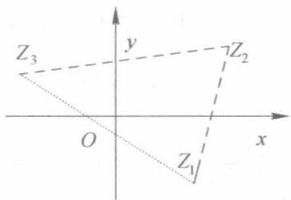
图1.9
(iv) 是否能依此类推？
探索对上述恒等式的证明方法：除使用复变函数理论证明外，能否有其他证明方法？数学归纳法能否证明？计算机仿真能否验证？
对恒等式的证明, 有兴趣的读者可参考文献: 复变函数论典型环路积分的理论分析. 杨华军. 四川大学学报, 2001。
⭕例1.8.2 当 时，求 的最大值与最小值， 是正整数， 是复常数。
【解】由于
故当 ，且矢量 与矢量 夹角为 时，右边不等式等号成立。故 的最大值是 。
对于极小值，要分情况讨论：
（1）若 ，则 。等号当 且 与 方向相反时成立。这时最小值是 。
(2) 若 , 则 , 当 时等号成立, 最小值为 0。
总之，不论 为何复数， 的最大值是 ；而当 时，最小值为 ；当 时，最小值为 0。
⭕例1.8.3 设 和 满足 ，且 。证明： 和 为内接于单位圆的正三角形三顶点。
【证明】由条件， 均位于以原点(0,0)为圆心、1为半径的单位圆周上，不失一般性，可设 ，则为证结论，只需证 即可。由 得
故 ，即 ，代入式(1.8.3)得
所以 即
说明：本题的关键在于对问题的恰当转化，否则较为麻烦。这里的假定不失一般性，即作
旋转变换，取 ，经过旋转变为
⭕例1.8.4 试确定不等式 所确定的点集是什么图形？
【解】方法1（按复数几何意义和辐角定义分析）：先考虑满足等式 的点的集合。因为
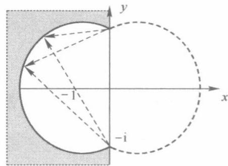
图1.10
又 和 分别是始点在 和 而终点在 的矢量与正实轴的夹角，因此等式 表示到两定点 和 的张角之差等于定数 的点 的集合。由平面几何的定理知，这是缺了点 和 的两个圆弧。如图1.10所示，图中两个圆弧
实际上只有实线圆弧才是 所确定的点集，虚线圆弧是 所确定的点集。
再考虑等式 确定的点集。实际上，此点集是虚轴上点 以上，点 以下的点的全体。
从图1.10中可看出，半直线 与 和图1.10中实线圆弧将整个平面分为两部分。容易验证，左边的部分除去圆域，即图中淡灰色部分为不等式 所确定的点集。
方法2：由 ，根据辐角定义得出
由题意得到 。又在 的角度区域，正切函数是单调增的，对上述不等式两边取正切，得到
由此得到
而 是以 为圆心、以 为半径的圆周，所以满足题给条件的是图1.10中的灰色部分。根据题给辐角不等式，对于 ，可以验证，其辐角不满足要求。
⭕例1.8.5 研究什么原像通过映射 后变为相互垂直的直线 。
【解】因 ，可以视为从 平面到 平面的映射，即为从 平面（原像）到 平面（像）的映射，易得
我们具体考察在 平面的像为相互垂直的直线，原像应该是什么？由题得到
即 （原像为双曲线，如图1.11(a)实线所示）（原像为双曲线，如图1.11(a)虚线所示）
另外，我们还可以进一步观察双曲线对应的变化关系。
特别地，当原像点在图1.11（a）的双曲线右分支实线上时，由 且 得到， 。因此双曲线的右分支的像可以表示为参数形式：
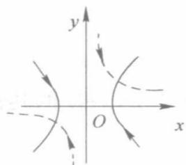
(a)
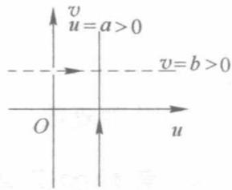
(b)
图1.11
显然，当点 沿着右分支实线向上运动时，它的像沿如图1.11(b)所示的直线 向上运动。同样，双曲线左分支的像的参数形式表示为
当左分支上的点沿曲线向下运动时，它的像也沿直线 向上运动。
同样可以分析另一双曲线
映射到直线 。变化趋势如图1.11(a)、(b)中虚线所示，读者可自行分析。
⭕例1.8.6 研究下列函数在 点的连续性
(1)
(2)
【解】（1） ，又因为 ，故函数 连续。
(2) ，又因为 ，故函数 连续。
小结
1. 复数的概念
定义形如 的数为复数，记为 。其中 分别称为复数 的实部、虚部，记为 ，i 称为虚数单位，它满足 。与实数不同，两个复数之间一般不能比较大小。
2. 复数的表示法
（1）几何表示：复数 可以用平面上起点在 ，终点在 的矢量 表示。
（2）代数表示：平面上的点 可用代数形式 表示复数，这种表示法称为代数表示，也可称为直角坐标表示。
（3）三角函数表示：当 时，复数可用三角函数形式 的表示。其中 称为复数 的模； （ 取整数），称为 的辐角。当 时，对应于辐角的主值 ，在本书中规定为 。
（4）指数表示：当 时， 还可以用指数形式表示： ，其中 ；当 时， ，它的辐角没有意义；当 时， ，它的实部、虚部、辐角都没有意义。
(5)共轭复数： 称为 的共轭复数。
3. 复数的运算
（1）复数满足常规的四则运算规律。
（2）若 ，则
（3）乘幂：若 ，则 。
当 时， ，即为 De Moivre 公式。
（4）方根：设 ，则
关于复数的模和辐角有以下运算公式
4. 区域和平面曲线
本章给出了系统的有关区域和平面曲线的概念。
（1）区域：严格的定义是指同时满足下列两个条件的点集 ：①全由内点组成；②具有连通性：即点集中的任意两点都可以用一条折线连接起来，且折线上的点全都属于该点集。满足这两个条件的点集 称为区域。
连通的开集称为区域，区域与它的边界一起构成的点集称为闭区域。区域可分为有界区域和无界区域，区域还有单连通区域与复连通区域之分。
(2) 没有重点的连续曲线称为简单曲线。若简单曲线的两个端点重合, 则称为简单闭曲线。
5. 复变函数
（1）对于函数 ，如令 ，则一个复变函数 相当于两个实变量函数 。复变函数 确定了 平面上的点集 到 平面上点集 之间的一个映射。如果 ，则称 为 的像，而 称为 的原像。
（2）极限与连续
函数 的极限等价于两个二元实函数 和 的极限。
函数 在点 处的连续性等价于两个二元实函数 和 在该点处的连续性。
习题1
1.1 写出下列复数的实部、虚部、模和辐角以及辐角的主值，并分别写成代数形式、三角函数形式和指数形式（其中， 为实常数）。
（1）-1-√3i
(2)
(3)
(4)
(5)
(6)
1.2 计算下列复数
(1)
(2)
1.3 计算下列复数
(1)
(2)
1.4 已知 为实数，求复数 的实部和虚部。
1.5 如果 ，试证明对于任何复常数 和 ，有 。
1.6 证明：如果复数 是实系数方程 的根，则 一定也是该方程的根。
1.7 证明： ，并说明其几何意义。
1.8 若 ，试求 的值。
1.9 将下列复数表示为 的幂的形式。
(1)
(2)
1.10 证明：如果 是1的 次方根中的一个复数根，但 ，则必有
1.11 对于复数 和 , 证明复数形式的柯西不等式成立, 即
1.12 证明：
成立。
1.13 下列不等式在复平面上表示怎样的点集？
(1)
(2)
(3)
(4)
(5)
1.14 指出下列关系表示的点之轨迹或范围，并说明是何种点集？
(1)
(2)
1.15 描述下列不等式所确定的点集，并指出是开区域还是闭区域，有界还是无界，单连通域还是复连通域。
(1)
(2)
(3)
(4)
(5)
(6)
(7)
（8）
1.16 已知映射 求：
（1）圆周的像；（2）直线 的像；（3）区域 的像。
1.17 讨论下列函数在指定点极限的存在性，若存在则求出其极限，并判断在该点的连续性。
(1)
(2)
1.18 若函数 在点 处连续，证明：
（1） 在该点连续；（2） 的模在该点连续。
计算机仿真编程实践
（说明：读者可参考第四篇的计算机仿真编程实践）
1.19 使用Matlab、Mathcad或Mathmatic计算机仿真求解下列复数的实部、虚部、共轭复数、模与辐角。
(1)
1.20 计算机仿真计算：
(1)
1.21 计算机仿真求解方程
1.22 若 对应为 的根，其中 且取整数。试用计算机仿真编程验证下列数学恒等式 成立。
1.23 用计算机编程实践方法（Matlab，Mathcad，Mathmatic，C/C++）实现：
（1）绘出单位圆及其内接正17边形；
（2）计算机编程求出边长；
（3）能否对多边形进行推广，得出相应的计算机仿真计算方法
1.24 验证：对复平面上任意两个以上的不重合的有限远点 和 ，（即确保分母不为零），
恒等式 是否成立？
式中自然数 ，而 和 为1至 的整数。（提示：利用随机函数产生随机数 ，从而验证恒等式是否成立。）